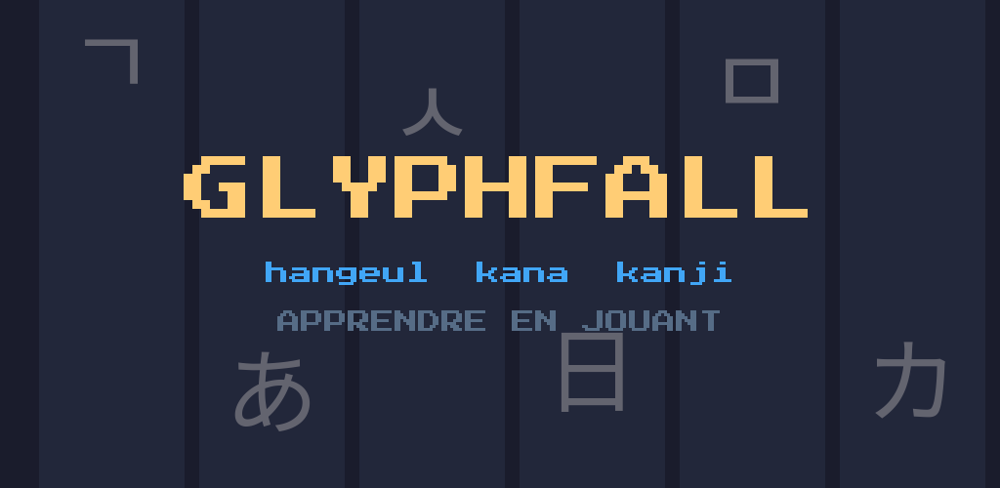

Les signes tombent. Vous tapez leur lecture avant qu'ils touchent le sol. Au bout de quelques parties, vous lisez le hangeul — personne ne vous a demandé de réviser.
Jouer dans le navigateurSans installation, sans compte. Il faut un navigateur récent : le jeu s'appuie sur WebGL 2.
Télécharger
Linux
Paquet Debian, ou archive

Ce que contient le jeu
4parcours
58niveaux
208signes
4modes
- Le hangeul coréen, ses quatorze consonnes et ses dix voyelles, puis les syllabes.
- Les hiragana et les katakana, soixante-et-onze signes chacun.
- Vingt premiers kanji : les nombres, les jours de la semaine.
- Chaque signe a sa fiche : le tracé trait par trait, un moyen de le retenir, sa prononciation — et la voix d'un locuteur pour le coréen et les kana.
- Quatre modes, du normal noté en étoiles à l'infini, où la chute accélère jusqu'à ce que vous cédiez.
Sans rien demander
- Pas de publicité, pas d'achat, pas de compte.
- Aucune permission demandée sur Android.
- Votre progression reste chez vous et n'en sort pas.
- Logiciel libre sous licence GPL-3.0 : le code est public, et toute version dérivée doit le rester.